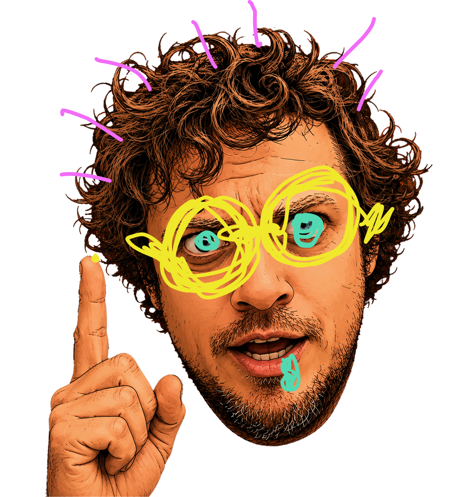

Journal d'apprentissage
- Apprendre le CSS
- Publié le 01/07/2026
- Lire l'article

- Réflection sur l'utilisation de l'AI
- Publié le 05/07/2026
- Lire l'article
Apprendre le CSS
La transition entre les outils de création graphique et le code est assez spéciale. Cela semblait presque une montagne,
une tache qu'il fallait déconstruire pour mieux la réaprendre.
Mais l'expérience parle. Les heures passé à observer
des graphiques de courbe de couleurs pour en comprendre la signification, la compréhension des différents formats d'image,
comment fonctionne les vecteurs... J'ai tout retrouvé dans le code. le clip-path m'a permis de découper ma forme comme je
le voulais comme si j'accrochais des points à mes vecteurs. Je devais seulement indiquer où je voulais que mon point sois
dans l'écran puis c'était un jeu de relier les points numéroté. Ensuite, pour une animation simple comme mon nom ainsi que la page
où nous sommes flash, il ne restait qu'à suivre un peu le meme patern linéaire mais cette fois si avec les pourcentages.
Il a été aussi plus facile pour moi, lors de cet exercice, de comprendre les principes du html et du css et leur
étroite collaboration pour etre capable d'enligner ce que je veux présenter avec un look qui réussi à puncher.
J'ai tiré
cette phrase de chatgpt qui parlait de moi : Créer est ma façon de réfléchir.
Réflection sur l'utilisation de l'AI
Texte complet de ton article...